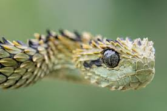
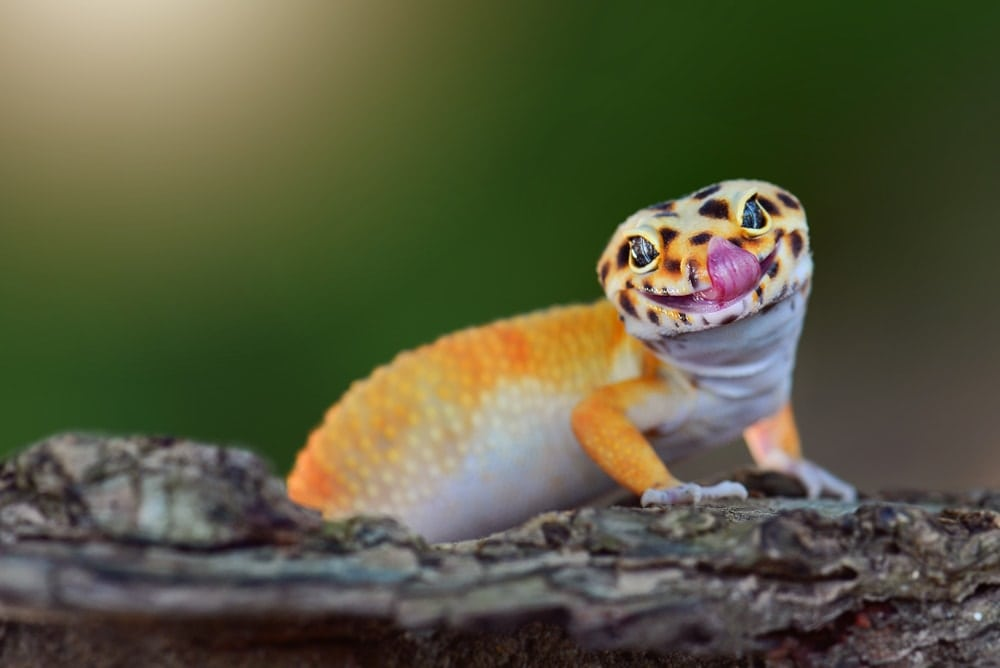
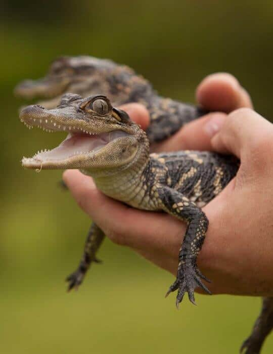
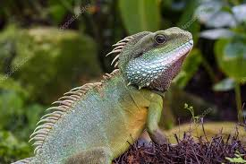
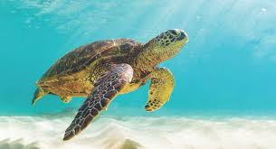
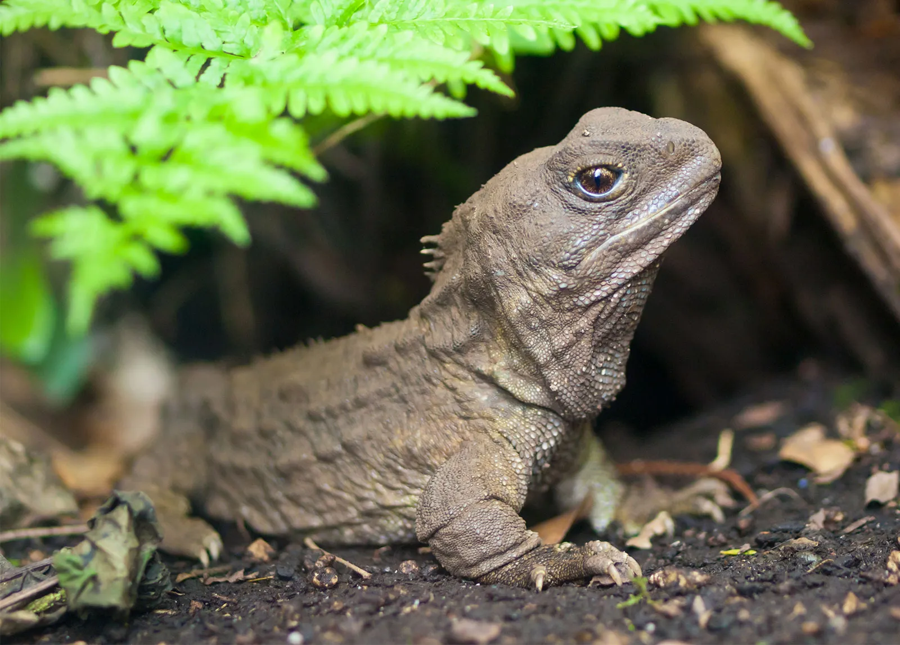

Featured Reptile
SNAKES

Serpentes
Snakes do not have eyelids, which means they cannot blink. Arizona is home to 13 different species of rattlesnake.
Learn MoreLIZARDS

Lacertilia
Lizards make use of a variety of antipredator adaptations, including venom, camouflage, reflex bleeding, and the ability to sacrifice and regrow their tails.
Learn MoreCrocodile

Crocodile
They have 60-110 teeth and replace 6000 teeth in their lifetime.They Have Incredibly Powerful Jaws.
Learn MoreIguanas

Iguanas
They will often jump from tree to water using their powerful tail for swimming to escape
Learn MoreTURTLE

Testudines
they breathe air and lay their eggs on land, although many species live in or around water
Learn MoreTuatara

Sphenodontia
They are New Zealand's largest reptile. Adult males are about 0.5 metres in length, and weigh up to 1.5 kg when fully grown
Learn More